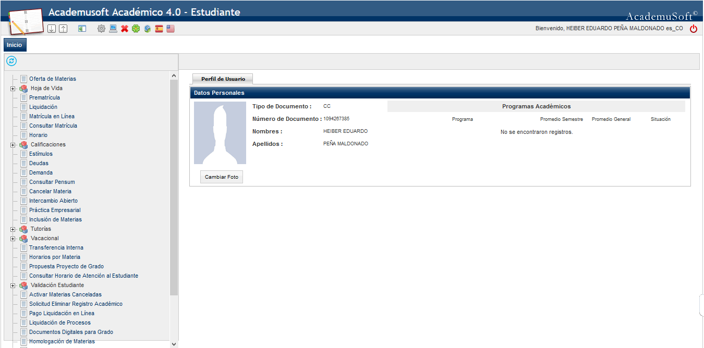
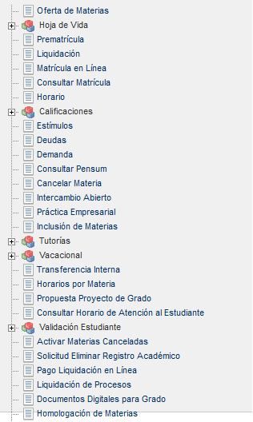
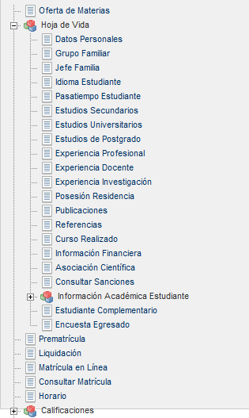

Bienvenidos al módulo Académico diseñado para el estudiante, creado para ofrecerle un entorno que le permita realizar consultas dinámicas de la liquidación, llevar a cabo el proceso de matrícula académica, el cual se encuentra dividido en varios procesos de acuerdo al calendario académico establecido por la Institución Educativa y la forma de cobro de las asignaturas que éste registra dentro del rango de fechas parametrizadas en el sistema.
Se proporciona a los alumnos la posibilidad de ingresar con un usuario y contraseña propios, visualizar la información personal, actualizarla cuando lo crea conveniente, verificar la liquidación con los recargos y descuentos asignados, consultar las notas que ha obtenido en el actual periodo y en toda su trayectoria académica. Visualizar los estímulos que le hayan otorgado ya sea en el área académica, artística, laboral, o deportiva, según lo tenga establecido la institución en el respectivo reglamento estudiantil o manual de convivencia.
El proceso de consulta y de matrícula en línea, se convierte en una herramienta estratégica para agilizar la matrícula de materias, la inserción y cancelación de las mismas con sus respectivos grupos y horarios; busca a través de la implementación y puesta en marcha ofrecer un producto eficaz, aplicando un proceso que conduce a un resultado de alta calidad que satisfaga las necesidades y cumpla con las expectativas de quienes se beneficiarán con el uso del aplicativo.
Una vez el estudiante se ha logueado con su usuario y contraseña, se desplegará la interfaz del Vortal que muestra el siguiente ícono: por el cual va a ingresar el alumno. Luego el sistema le plasma una iconografía que involucra diferentes procesos que serán descritos en el presente manual.

El sistema despliega una interfaz en la cual se muestran las funcionalidades que el estudiante tiene disponibles desde su entorno.

